TL;DR
BridgeVLA makes 3D manipulation learning data-efficient by aligning both ends of a pre-trained VLM: point clouds are rendered into multi-view orthographic images, and actions are predicted as 2D heatmaps in that same image space. BridgeVLA++ adds a unified spatio-temporal memory — temporal memory keeps the interaction history to decide what to do next, spatial memory re-renders earlier, less-occluded geometry to decide where exactly to act — reaching state of the art on memory-dependent manipulation without giving up the data efficiency or out-of-distribution generalization of the base model.
Abstract
Leveraging pre-trained vision-language models (VLMs) to construct vision-language-action (VLA) models has emerged as a promising paradigm for 3D robot manipulation. However, existing 3D VLA methods remain data-hungry, generalize poorly to distribution shifts, and lack explicit memory of past observations. These limitations hinder their application to data-scarce, open-world and memory-dependent manipulation scenarios. In our previous work, BridgeVLA improves data efficiency and generalization by preserving the input–output alignment of a pre-trained VLM during 3D action learning: raw point clouds are projected into multi-view images, and intermediate heatmaps are predicted before generating robot actions.
In this work, we further extend BridgeVLA with a unified spatio-temporal memory architecture that models persistent spatial context and temporal interaction history. The resulting memory-augmented framework can reason over historical observations while preserving the hallmark data efficiency and strong generalization capability of BridgeVLA. Extensive experiments show that our framework establishes a strong foundation for spatial manipulation tasks and robust generalization (evaluating the base BridgeVLA on RLBench, COLOSSEUM and GemBench). When equipped with the unified spatio-temporal memory, BridgeVLA++ further achieves state-of-the-art performance on two challenging memory-dependent manipulation benchmarks without sacrificing the data efficiency and generalization of the original BridgeVLA. In addition, BridgeVLA++ extends effectively to bimanual manipulation and is validated on a new real-world robot embodiment, demonstrating its scalability across tasks, environments and robot embodiments. These results establish BridgeVLA++ as a unified 3D vision-language-action framework that simultaneously supports data-efficient learning, robust generalization and memory-aware robot manipulation.
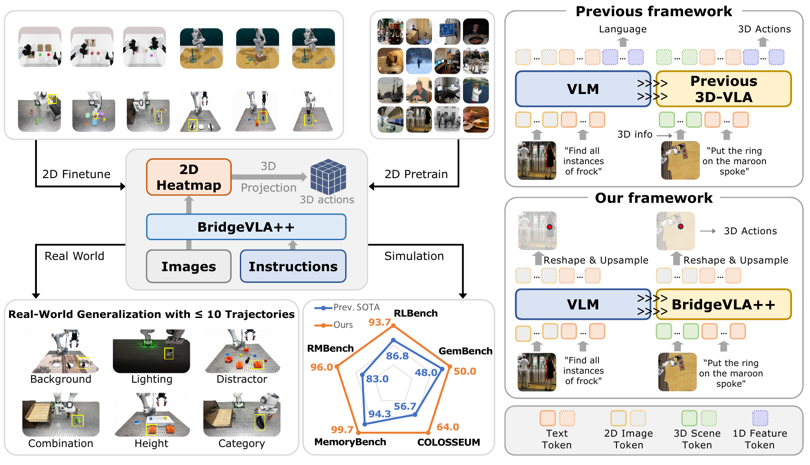
Part I — BridgeVLA: spatial input–output alignment
A pre-trained VLM is fluent in 2D images and language, not in point clouds and 6-DoF poses. BridgeVLA closes that gap from both sides: the input is rendered back into images, and the output is expressed as heatmaps that live in the very same image space.
Multi-view orthographic projection
RGB-D observations from calibrated cameras are fused into a colored point cloud and rendered into three orthographic views (top, front, right), following RVT / RVT-2. The VLM sees only images and language — no proprioceptive state is injected into its forward pass, which keeps the input distribution close to pre-training.
2D-heatmap pre-training
Before any robot data is touched, the VLM (PaliGemma: SigLIP + Gemma) is taught to ground language-specified objects as spatial heatmaps on the 120K object-detection split of RoboPoint. Output image tokens are rearranged into a patch grid and decoded by a convex-upsampling module, supervised with a cross-entropy loss against truncated Gaussian targets.
Coarse-to-fine 3D action decoding
Candidate 3D locations are scored by summing the per-view heatmap values at their projections; the arg-max becomes the next-keyframe translation. A second pass re-renders a zoomed crop around the coarse prediction for precision. Rotation (continuous 6D), gripper state and the collision flag come from a three-layer MLP on pooled global plus local per-view tokens.
Part II — BridgeVLA++: unified spatio-temporal memory
The coarse-to-fine design exposes exactly two stages where past observations help, and they need different things. The coarse stage reasons over the whole workspace and must know what has already happened; the fine stage localizes inside a zoomed crop and must see geometry the arm is currently hiding. BridgeVLA++ therefore injects a different memory at each stage — both in the VLM patch-token space, so the heatmap action interface is unchanged.
Temporal memory → what to do next
Injected at the coarse stage as three token banks: initial anchor views (the episode's first render, a fixed global reference), neighbouring keyframes (the most recent n = 2 executed keyframes, short-term context), and sub-goal keyframes (longer-term evidence of completed milestones).
A lightweight adaptive sub-goal gate decides what is worth keeping: a learnable query token pools the memory-conditioned tokens and a small MLP predicts a retention probability, so a frame is stored only when it adds information the memory does not already hold.
Spatial memory → where exactly to act
Injected at the fine stage. The colored point cloud of the initial observation, P0, is stored once and — unlike a fixed 2D image — can be re-rendered under any later zoom. Once the coarse stage picks a waypoint, the same crop is applied to both the live cloud and P0, and the reference is re-rendered through the fine-stage virtual cameras.
Because the two share a camera configuration they are aligned view by view, so tokens of each current view attend only to memory tokens of the corresponding reference view: complementary geometry, never a replacement for the live observation.
Injection & bimanual extension
Each memory-injection block is two attention layers: current tokens are queries, memory tokens are keys/values in cross-attention, then self-attention and a feed-forward fuse the result. The output keeps the input token-grid shape (V×N×d), so the convex-upsampling decoder and action heads run unmodified.
Because both memories describe the scene rather than an arm, bimanual manipulation needs only duplicated upsampling modules and action heads on a shared VLM backbone, shared memories and a shared sub-goal gate.
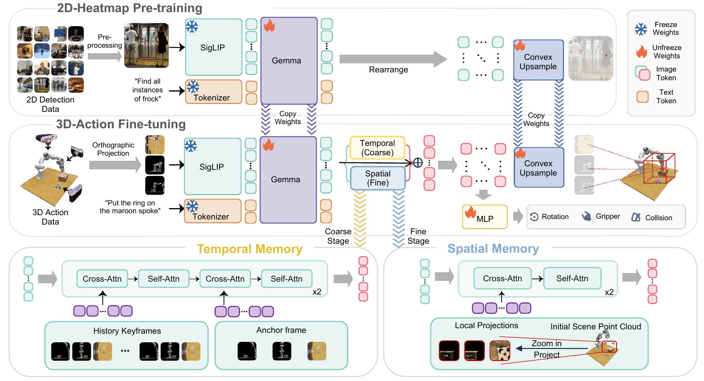
One recipe, five suites. RMBench and MemoryBench are the memory-dependent ones — the tasks BridgeVLA++ was built for; RLBench, COLOSSEUM and GemBench check that the base capabilities survive the memory extension: general manipulation, robustness to unseen perturbations, and systematic generalization. Pick a suite — every number mirrors the paper's tables.
Nine dual-arm tasks that cannot be solved from the current frame alone, split into short-term M(1) and long-term M(n) horizons; 50 demonstrations per task, 100 evaluation episodes. This is simultaneously the validation of the bimanual extension. BridgeVLA++ reaches a near-perfect 96.0%, ranking best or tied-best on eight of the nine tasks, while the memory-free base collapses to 18.9%.
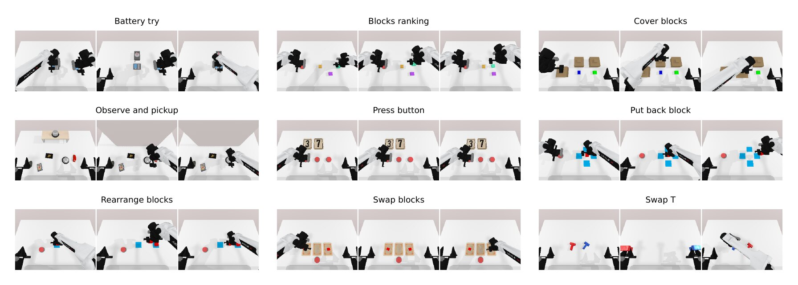
| Method | Overall Avg. ↑ | M(1) tasks | M(n) tasks | |||||||||
|---|---|---|---|---|---|---|---|---|---|---|---|---|
| Observe & Pick Up | Rearrange Blocks | Put Back Block | Swap Blocks | Swap T | Avg. | Battery Try | Blocks Ranking Try | Cover Blocks | Press Button | Avg. | ||
| DP [Chi et al. 2024] | 5.8 | 1 | 0 | 0 | 11 | 20 | 6.4 | 10 | 10 | 0 | 0 | 5.0 |
| ACT [Zhao et al. 2023] | 5.9 | 1 | 29 | 0 | 2 | 2 | 6.8 | 19 | 0 | 0 | 0 | 4.8 |
| π0.5 [Physical Intelligence 2025] | 10.4 | 9 | 13 | 11 | 24 | 15 | 14.4 | 16 | 6 | 0 | 0 | 5.5 |
| X-VLA [Zheng et al. 2025] | 9.8 | 9 | 13 | 18 | 16 | 3 | 11.8 | 26 | 1 | 2 | 0 | 7.3 |
| Mem-0 [Chen et al. 2026] | 42.0 | 4 | 89 | 90 | 67 | 14 | 52.8 | 28 | 18 | 68 | 0 | 28.5 |
| Fast-WAM [Yuan et al. 2026] | 5.9 | 0 | 0 | 0 | 0 | 7 | 1.4 | 20 | 26 | 0 | 0 | 11.5 |
| LingBot-VA [Li et al. 2026] | 78.2 | 13 | 100 | 100 | 99 | 88 | 80.0 | 41 | 100 | 79 | 84 | 76.0 |
| MemoryWAM [Yang et al. 2026] | 83.0 | 27 | 100 | 100 | 100 | 94 | 84.2 | 41 | 100 | 98 | 87 | 81.5 |
| WLA-0 [Yang et al. 2026] | — | — | — | — | — | — | — | 45 | 23 | 84 | 74 | 56.5 |
| BridgeVLA (ours, base) | 18.9 | 75 | 0 | 1 | 11 | 8 | 19.0 | 72 | 0 | 3 | 0 | 18.8 |
| BridgeVLA++ (ours) | 96.0 | 81 | 100 | 100 | 99 | 96 | 95.2 | 96 | 100 | 99 | 93 | 97.0 |
Table 1 — RMBench. Success rate (%) over 100 episodes per task on the nine dual-arm tasks, grouped by memory complexity. Baseline numbers are quoted from their sources; “—” denotes tasks a source does not evaluate. Best per task in bold.
Battery Try is the sharpest illustration: a trial-and-error sorting task where the policy must remember which attempts already failed. BridgeVLA++ reaches 96% against 45% for the strongest baseline.
Observe & Pick Up — 81%
Rearrange Blocks — 100%
Put Back Block — 100%
Swap Blocks — 99%
Swap T — 96%
Battery Try — 96% (best baseline 45%)
Blocks Ranking Try — 100%
Cover Blocks — 99%
Press Button — 93%
18 multi-task RLBench tasks, 100 demonstrations per task, mean success rate over five evaluation runs of 25 episodes. BridgeVLA reaches 90.5%, already 3.7 points above the previous state of the art; its remaining failures concentrate in occlusion-heavy tasks — exactly what the spatio-temporal memory addresses, lifting BridgeVLA++ to 93.7% with sort shape +16.8 and place cups +18.4.
- Protocol — 100 demonstrations per task; mean over five evaluation runs of 25 episodes.
- 93.7% — +6.9 points over SAM2Act (86.8%), the previous state of the art.
- Where the memory helps — occlusion-heavy precision tasks: Sort Shape +16.8, Place Cups +18.4.
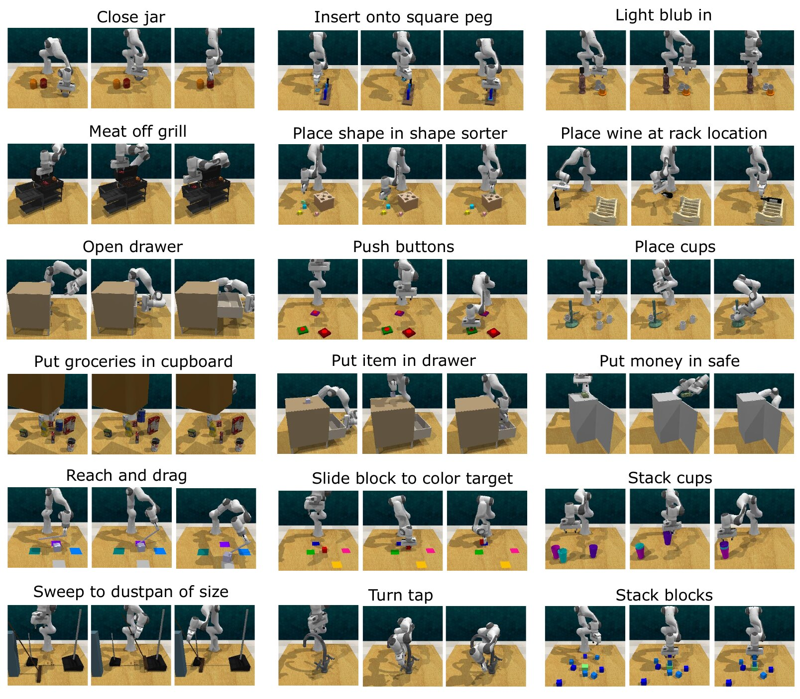
| Method | Avg. SR (%) ↑ | Avg. Rank ↓ | Close | Drag | Insert | Meat off | Open | Place | Place | Push | Put in | Put in | Put in | Screw | Slide | Sort | Stack | Stack | Sweep to | Turn |
|---|---|---|---|---|---|---|---|---|---|---|---|---|---|---|---|---|---|---|---|---|
| Jar | Stick | Peg | Grill | Drawer | Cups | Wine | Buttons | Cupboard | Drawer | Safe | Bulb | Block | Shape | Blocks | Cups | Dustpan | Tap | |||
| PerAct [Shridhar et al. 2023] | 49.4 | 11.33 | 55.2 | 89.6 | 5.6 | 70.4 | 88.0 | 2.4 | 44.8 | 92.8 | 28.0 | 51.2 | 84.0 | 17.6 | 74.0 | 16.8 | 26.4 | 2.4 | 52.0 | 88.0 |
| Act3D [Gervet et al. 2023] | 65.0 | 9.17 | 92.0 | 92.0 | 27.0 | 94.0 | 93.0 | 3.0 | 80.0 | 99.0 | 51.0 | 90.0 | 95.0 | 47.0 | 93.0 | 8.0 | 12.0 | 9.0 | 92.0 | 94.0 |
| RVT [Goyal et al. 2023] | 62.9 | 9.08 | 52.0 | 99.2 | 11.2 | 88.0 | 71.2 | 4.0 | 91.0 | 100.0 | 49.6 | 88.0 | 91.2 | 48.0 | 81.6 | 36.0 | 28.8 | 26.4 | 72.0 | 93.6 |
| 3D Diffuser Actor [Ke et al. 2024] | 81.3 | 6.19 | 96.0 | 100.0 | 65.6 | 96.8 | 89.6 | 24.0 | 93.6 | 98.4 | 85.6 | 96.0 | 97.6 | 82.4 | 97.6 | 44.0 | 68.3 | 47.2 | 84.0 | 99.2 |
| RVT-2 [Goyal et al. 2024] | 81.4 | 5.97 | 100.0 | 99.0 | 40.0 | 99.0 | 74.0 | 38.0 | 95.0 | 100.0 | 66.0 | 96.0 | 96.0 | 88.0 | 92.0 | 35.0 | 80.0 | 69.0 | 100.0 | 99.0 |
| SAM2Act [Fang et al. 2025] | 86.8 | 5.47 | 99.0 | 99.0 | 84.0 | 98.0 | 83.0 | 47.0 | 93.0 | 100.0 | 75.0 | 99.0 | 98.0 | 89.0 | 86.0 | 64.0 | 76.0 | 78.0 | 99.0 | 96.0 |
| BridgeVLA (ours, base) | 90.5 | 4.75 | 100.0 | 97.6 | 91.2 | 100.0 | 99.2 | 58.4 | 89.6 | 100.0 | 91.2 | 96.0 | 95.2 | 93.6 | 95.2 | 55.2 | 84.8 | 88.8 | 100.0 | 92.8 |
| BridgeVLA++ (ours) | 93.7 | 3.64 | 100.0 | 98.4 | 99.2 | 100.0 | 99.2 | 76.8 | 95.2 | 100.0 | 92.0 | 99.2 | 92.8 | 95.2 | 96.0 | 72.0 | 85.6 | 98.4 | 97.6 | 89.6 |
Table 2 — RLBench. Success rate (%) on the 18 standard tasks with average success rate and average rank (lower is better). Our rows report the mean over five seeds of 25 episodes; per-seed standard deviations are given in the paper. Best average in bold. Design and memory ablations of the same table are collected in the Ablations section.
One successful BridgeVLA++ rollout per task, taken straight from the evaluation logs. Percentages repeat the BridgeVLA++ row of Table 2.
Close Jar — 100.0%
Drag Stick — 98.4%
Insert Peg — 99.2%
Meat off Grill — 100.0%
Open Drawer — 99.2%
Place Cups — 76.8%
Place Wine — 95.2%
Push Buttons — 100.0%
Put in Cupboard — 92.0%
Put in Drawer — 99.2%
Put in Safe — 92.8%
Screw Bulb — 95.2%
Slide Block — 96.0%
Sort Shape — 72.0%
Stack Blocks — 85.6%
Stack Cups — 98.4%
Sweep to Dustpan — 97.6%
Turn Tap — 89.6%
All models are trained on unperturbed RLBench data for the 20 COLOSSEUM tasks and evaluated under 12 perturbation axes never seen in training, plus the original RLBench variation and a combined all-perturbations setting. BridgeVLA reaches 64.0%, over 7 points above RVT-2, and the memory extension keeps that robustness (65.2%) — with its largest single gain exactly in the hardest all perturbations setting (18.7% → 38.9%).
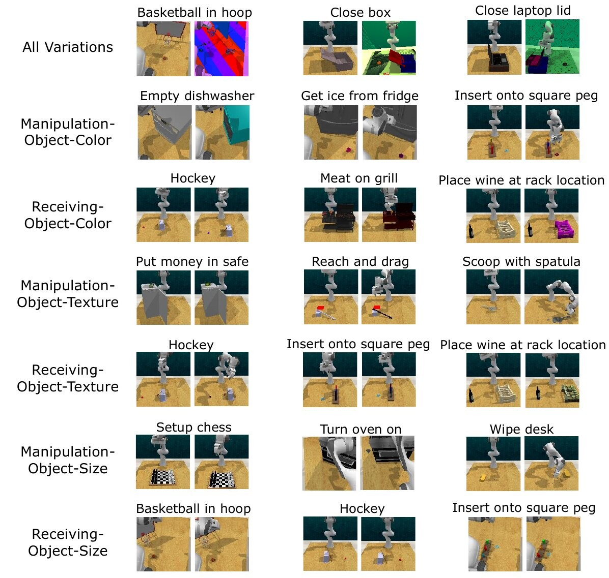
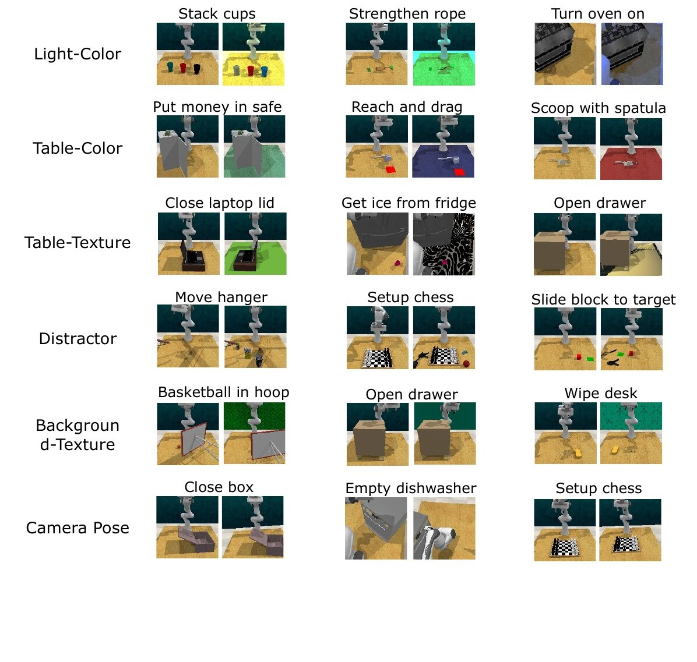
| Method | Avg. SR (%) ↑ | Avg. Rank ↓ | All | MO | RO | MO | RO | MO | RO | Light | Table | Table | Distractor | Background | RLBench | Camera |
|---|---|---|---|---|---|---|---|---|---|---|---|---|---|---|---|---|
| Perturb. | Color | Color | Texture | Texture | Size | Size | Color | Color | Texture | Texture | Pose | |||||
| R3M-MLP [Nair et al. 2022] | 0.8 | 6.71 | 0.6 | 0.4 | 0.0 | 0.0 | 0.0 | 1.8 | 0.0 | 1.0 | 1.4 | 0.2 | 1.6 | 1.2 | 2.0 | 0.8 |
| MVP-MLP [Xiao et al. 2022] | 1.6 | 6.00 | 0.8 | 1.2 | 0.0 | 0.4 | 0.0 | 4.44 | 0.0 | 1.6 | 1.6 | 1.0 | 3.8 | 2.2 | 2.0 | 2.6 |
| PerAct [Shridhar et al. 2023] | 27.9 | 4.71 | 7.2 | 24.0 | 29.2 | 28.8 | 17.71 | 35.6 | 29.3 | 29.1 | 30.4 | 23.2 | 27.1 | 33.5 | 39.4 | 36.3 |
| RVT [Goyal et al. 2023] | 35.4 | 4.29 | 6.4 | 26.0 | 31.3 | 44.8 | 41.1 | 35.3 | 40.5 | 34.0 | 30.0 | 45.2 | 18.8 | 46.4 | 53.4 | 42.2 |
| RVT-2 [Goyal et al. 2024] | 56.7 | 2.86 | 15.6 | 53.0 | 54.6 | 59.7 | 56.7 | 60.9 | 53.4 | 58.0 | 62.6 | 56.6 | 60.8 | 68.7 | 68.8 | 64.4 |
| BridgeVLA (ours, base) | 64.0 | 1.50 | 18.7 | 60.5 | 63.8 | 63.5 | 68.4 | 69.3 | 61.7 | 69.7 | 75.7 | 71.3 | 51.8 | 74.8 | 73.1 | 73.8 |
| BridgeVLA++ (ours) | 65.2 | 1.64 | 38.9 | 68.7 | 62.7 | 65.7 | 65.5 | 71.5 | 62.0 | 68.2 | 71.5 | 69.2 | 61.6 | 69.5 | 68.5 | 68.7 |
Table 3 — COLOSSEUM. Success rate (%) across the 14 evaluation settings. MO and RO denote perturbations of the manipulated object and the receptacle object. Baseline numbers for R3M-MLP, MVP-MLP, PerAct and RVT are quoted from the benchmark; RVT-2 and our models were trained and evaluated by us (mean over three test repetitions; variances in the paper).
Trained on 16 tasks (31 variations) and evaluated on 44 held-out tasks (92 variations) across four generalization levels. BridgeVLA sets a state-of-the-art 50.0% average, and BridgeVLA++ raises it to 51.1% — notably turning the long-horizon L4 level from 0.0% to 8.2%, where the episodic memory finally gives the policy something to sequence over.
- L1 Novel placements — 88.6%
- L2 Novel rigid objects — 68.9%, the best of all methods.
- L3 Novel articulated objects — 38.5% (base BridgeVLA: 43.8%, the best).
- L4 Long-horizon — 0.0% → 8.2%: the episodic memory finally gives the policy something to sequence over.
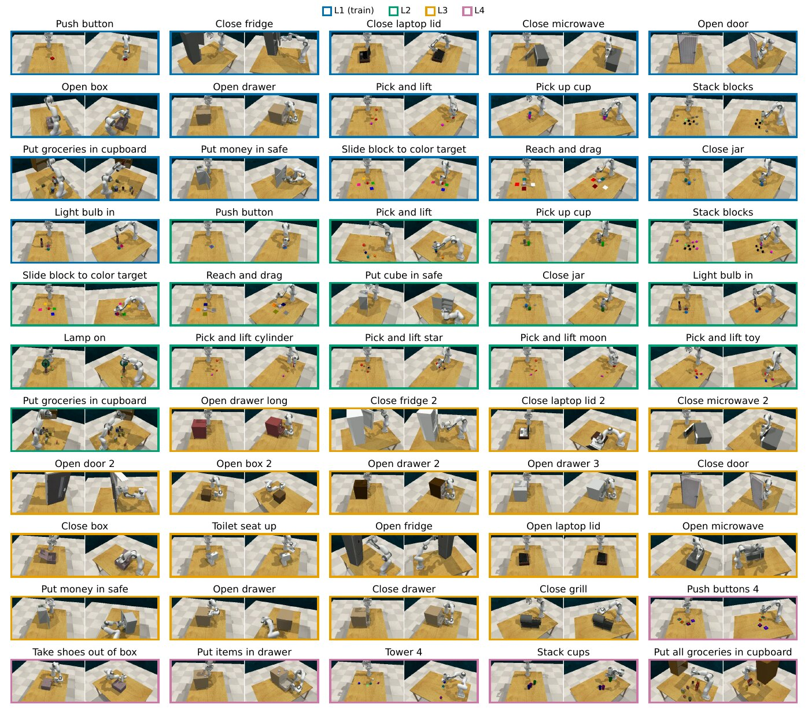
| Method | Avg. SR (%) ↑ | L1 | L2 | L3 | L4 |
|---|---|---|---|---|---|
| Placement | Rigid | Articulated | Long-Horizon | ||
| Hiveformer [Guhur et al. 2023] | 30.4 | 60.3 | 26.1 | 35.1 | 0.0 |
| PolarNet [Chen et al. 2023] | 38.4 | 77.7 | 37.1 | 38.5 | 0.1 |
| 3D Diffuser Actor [Ke et al. 2024] | 43.1 | 91.9 | 43.4 | 37.0 | 0.0 |
| RVT-2 [Goyal et al. 2024] | 44.0 | 89.1 | 51.0 | 36.0 | 0.0 |
| 3D-LOTUS [Garcia et al. 2024] | 45.7 | 94.3 | 49.9 | 38.1 | 0.3 |
| 3D-LOTUS++ [Garcia et al. 2024] | 48.0 | 68.7 | 64.5 | 41.5 | 17.4 |
| BridgeVLA (ours, base) | 50.0 | 91.1 | 65.0 | 43.8 | 0.0 |
| BridgeVLA++ (ours) | 51.1 | 88.6 | 68.9 | 38.5 | 8.2 |
Table 4 — GemBench. Success rate (%) over 20 trials per task variation, five random seeds; per-level standard deviations are given in the paper. Baselines are quoted from the GemBench benchmark [Garcia et al. 2024], except the 3D Diffuser Actor average, recomputed as the mean of its four levels (its source prints 44.0). Our rows were trained and evaluated on keyframes only, without demo augmentation.
The memory generalizes beyond bimanual coordination: on the three single-arm MemoryBench scenarios BridgeVLA++ reaches 99.7 ± 0.3%, against 94.3% for SAM2Act+ — while the memory-free base model collapses to 11.3%, confirming that these tasks genuinely require episodic memory.
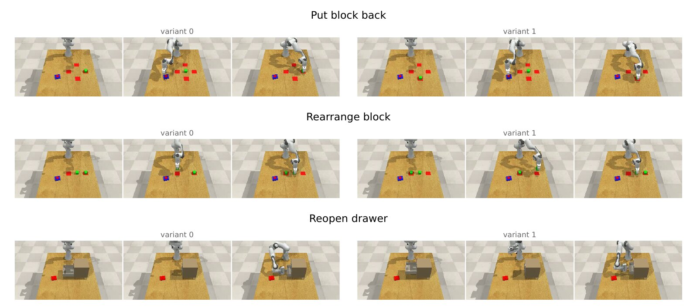
| Method | Avg. SR (%) ↑ | Reopen | Put Block | Rearrange |
|---|---|---|---|---|
| Drawer | Back | Block | ||
| RVT-2 [Goyal et al. 2024] | 54.0 ±5.3 | 60.0 ±0.0 | 50.0 ±2.3 | 52.0 ±3.3 |
| SAM2Act [Fang et al. 2025] | 55.0 ±24.3 | 48.0 ±0.0 | 35.0 ±3.8 | 82.0 ±2.3 |
| SAM2Act+ [Fang et al. 2025] | 94.3 ±9.0 | 84.0 ±0.0 | 100.0 ±0.0 | 99.0 ±2.0 |
| BridgeVLA (ours, base) | 11.3 ±0.8 | 29.6 ±4.3 | 2.8 ±1.8 | 1.6 ±2.6 |
| BridgeVLA++ (ours) | 99.7 ±0.3 | 100.0 ±0.0 | 99.8 ±0.4 | 99.2 ±1.1 |
Table 5 — MemoryBench. Single-arm memory-dependent suite. Baselines are quoted from [Fang et al. 2025] as mean±std over four evaluation runs; in the Avg. column the deviation is the spread across the three tasks. Our rows are mean±std over five evaluation seeds. The memory-free base policy collapses to 11.3%, confirming that these tasks genuinely require episodic memory.
Reopen Drawer — 100.0%
Put Block Back — 99.8%
Rearrange Block — 99.2%
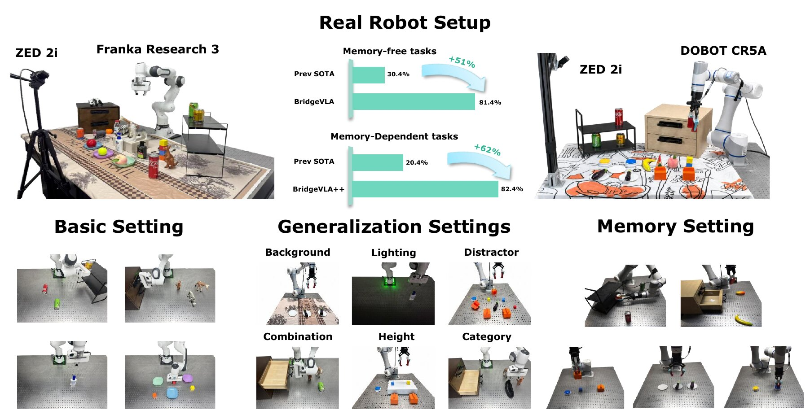
Memory on a held-out embodiment
The Franka suite is near-saturated, which proves those tasks are solvable from the current frame alone. So the memory is tested on a second, held-out embodiment with three tasks built so that the current observation underdetermines the next action — plus two ordinary pick-and-place families that check the memory costs nothing on tasks that never needed it. All methods train on the same 70 demonstrations (10 per language instruction).
Press Button — counting
Press the blue button exactly N times (given in words, “twice” / “three times”), then the yellow button once. A press leaves no visible trace, so every post-press frame is identical up to nuisance variation: the running count exists only in the policy's history. Neither baseline solves a single trial in any setting.
Cover Blocks — occlusion
Cover all three blocks, then uncover only the block of the instructed color. Covering erases the color evidence from the scene, so the second phase is solvable only from the colour-to-location bindings formed before the covers went on.
Swap Eggplant — rearrangement
Two look-alike eggplants must end up each on the other's initial plate, using a third plate as a buffer that must be empty again at the end. Intermediate configurations recur across phases, so the correct next placement depends on which eggplant has already moved.
| Method | Mem. | Memory-dependent | Memory-free | |||
|---|---|---|---|---|---|---|
| Cover Blocks | Press Button | Swap Eggplant | Put in Drawer | Put on Shelf | ||
| SAM2Act+ [Fang et al. 2025] | ✓ | 20.0% | 0.0% | 70.0% | 60.0% | 0.0% |
| BridgeVLA (base) | ✗ | 0.0% | 0.0% | 60.0% | 100.0% | 90.0% |
| BridgeVLA++ | ✓ | 100.0% | 100.0% | 80.0% | 100.0% | 100.0% |
Table 6 — DOBOT, basic setting. Ten trials per language instruction. Put in Drawer and Put on Shelf are each evaluated with two instructions (upper and lower target) and reported as their average.
| Method | Mem. | Basic | Visual disturbance | ||||
|---|---|---|---|---|---|---|---|
| Distractor | Background | Height | Lighting | Avg. | |||
| Memory-dependent tasks | |||||||
| SAM2Act+ [Fang et al. 2025] | ✓ | 30.0% | 0.0% | 0.0% | 0.0% | 3.3% | 0.8% |
| BridgeVLA (base) | ✗ | 20.0% | 20.0% | 23.3% | 6.7% | 13.3% | 15.8% |
| BridgeVLA++ | ✓ | 93.3% | 73.3% | 86.7% | 76.7% | 76.7% | 78.3% |
| Memory-free tasks | |||||||
| SAM2Act+ [Fang et al. 2025] | ✓ | 30.0% | 0.0% | 0.0% | 0.0% | 7.5% | 1.9% |
| BridgeVLA (base) | ✗ | 95.0% | 57.5% | 72.5% | 67.5% | 67.5% | 66.3% |
| BridgeVLA++ | ✓ | 100.0% | 70.0% | 100.0% | 82.5% | 75.0% | 81.9% |
Table 7 — DOBOT, all settings. Each entry is the unweighted mean over the three memory-dependent or two memory-free tasks; Avg. averages the four disturbance settings. The memory advantage survives every disturbance, and on tasks that never needed memory BridgeVLA++ is no weaker than the base model in any setting.
Browse every rollout
All seven language instructions across all five evaluation settings, as recorded on the DOBOT platform. Pick a task, then a setting — the panel shows that exact rollout together with the success count behind it.
Success over 10 trials — this task, this setting
BridgeVLA++ across all settings
Keyframe rollout (basic setting)
General manipulation with 10 demonstrations
13 tasks spanning 3–9 keyframes each, from simple pick-and-place to long-horizon drawer manipulation, trained from 10 kinesthetic demonstrations per task and evaluated over 10 trials per task per method. BridgeVLA completes 96.9% of trials and never falls below 9/10 on any task. The cleanest evidence for the alignment argument is π0: it shares the same PaliGemma backbone and differs only in the action interface — and it reaches 3.8%.
| Method | Avg. SR (%) ↑ | Soda Can | Giraffe | Red Block | Press | RedBull | RedBull | Coke | Orange Block | Red Block | Yellow Block | Zebra | Zebra | Wolf |
|---|---|---|---|---|---|---|---|---|---|---|---|---|---|---|
| Bottom Shelf | Lower Drawer | Blue Plate | Sanitizer | Top Shelf | Bottom Shelf | Top Shelf | Green Plate | Purple Plate | Green Plate | Upper Drawer | Lower Drawer | Upper Drawer | ||
| SpatialVLA (50 demos) [Qu et al. 2025] | 28.5 | 1/10 | 1/10 | 5/10 | 6/10 | 3/10 | 1/10 | 2/10 | 6/10 | 3/10 | 5/10 | 2/10 | 0/10 | 2/10 |
| SpatialVLA (10 demos) [Qu et al. 2025] | 3.1 | 0/10 | 0/10 | 0/10 | 2/10 | 0/10 | 0/10 | 0/10 | 1/10 | 1/10 | 0/10 | 0/10 | 0/10 | 0/10 |
| π0 [Black et al. 2024] | 3.8 | 0/10 | 0/10 | 2/10 | 1/10 | 0/10 | 1/10 | 0/10 | 0/10 | 0/10 | 1/10 | 0/10 | 0/10 | 0/10 |
| ACT [Zhao et al. 2023] | 22.3 | 2/10 | 2/10 | 3/10 | 2/10 | 3/10 | 1/10 | 2/10 | 2/10 | 3/10 | 4/10 | 1/10 | 2/10 | 1/10 |
| RVT-2 [Goyal et al. 2024] | 90.0 | 10/10 | 8/10 | 8/10 | 10/10 | 9/10 | 10/10 | 10/10 | 10/10 | 9/10 | 9/10 | 7/10 | 8/10 | 9/10 |
| BridgeVLA (ours, 10 demos) | 96.9 | 9/10 | 9/10 | 10/10 | 10/10 | 10/10 | 10/10 | 10/10 | 10/10 | 10/10 | 10/10 | 9/10 | 10/10 | 9/10 |
| BridgeVLA (ours, 3 demos) | 95.4 | 9/10 | 10/10 | 10/10 | 10/10 | 9/10 | 10/10 | 10/10 | 10/10 | 10/10 | 10/10 | 9/10 | 10/10 | 7/10 |
Table 8 — Real Franka results, basic setting. Success counts over 10 trials per task. All methods use 10 demonstrations per task except SpatialVLA (50) and the 3-demonstration reference row. ACT is trained single-task, as it is not language-conditioned; test scenes are photographed and manually aligned across methods.
Generalization to unseen conditions and instructions
Six generalization settings. Four probe robustness to visual disturbance — Distractor, Lighting, Background, Height — and two probe instruction-level generalization: Combination (object–skill pairings each seen in training, never demonstrated together) and Category (object categories absent from the robot data). BridgeVLA beats RVT-2, the strongest baseline of this suite, in all seven settings, by 32% on average, with the widest margins under Lighting and Combination.
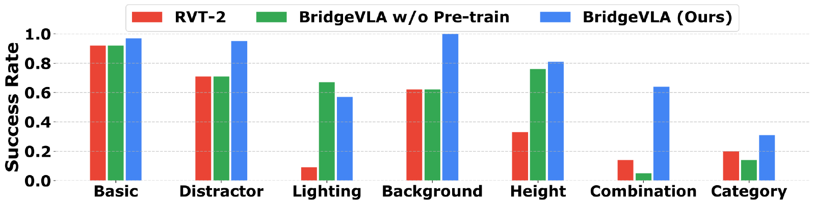
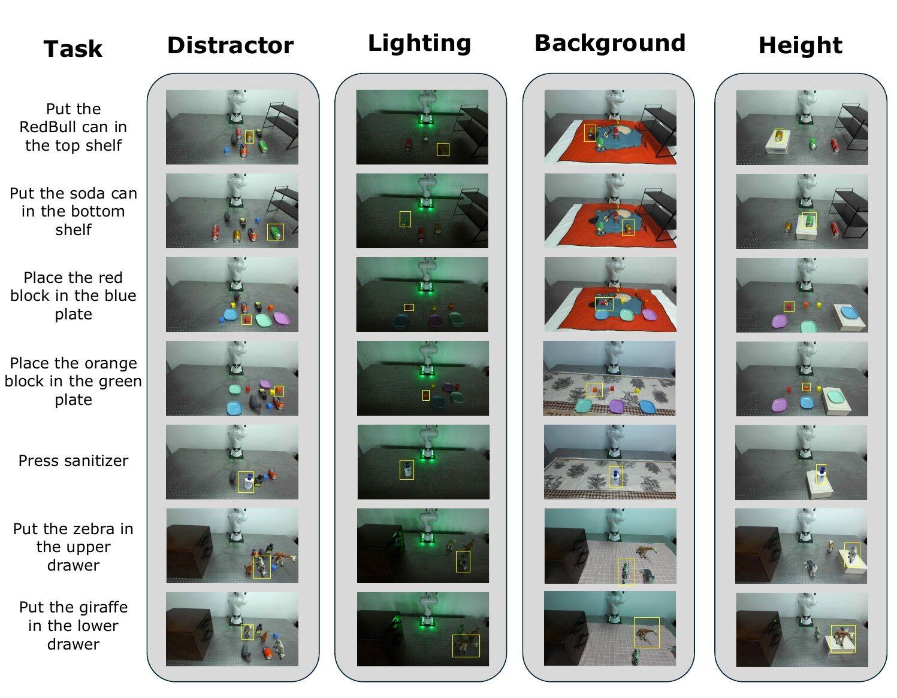
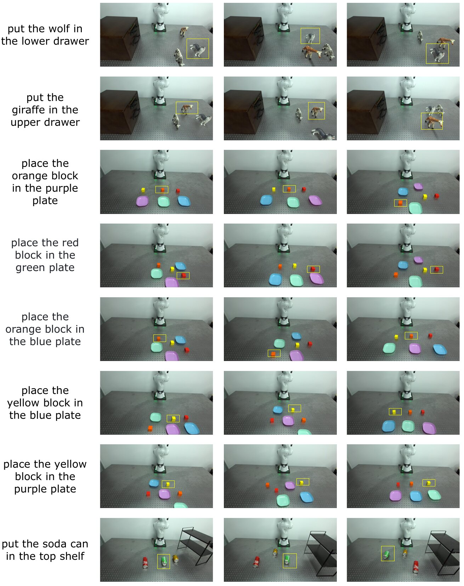
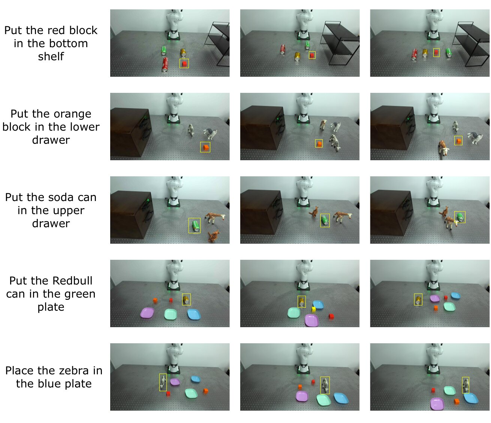
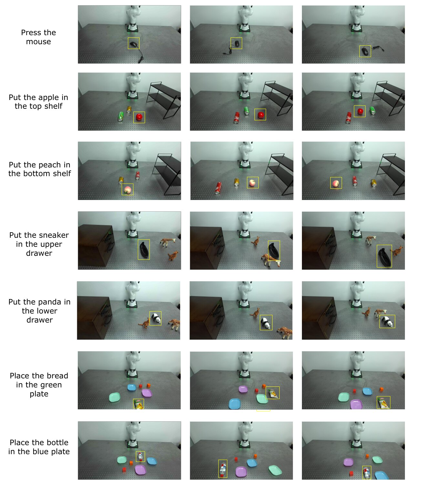
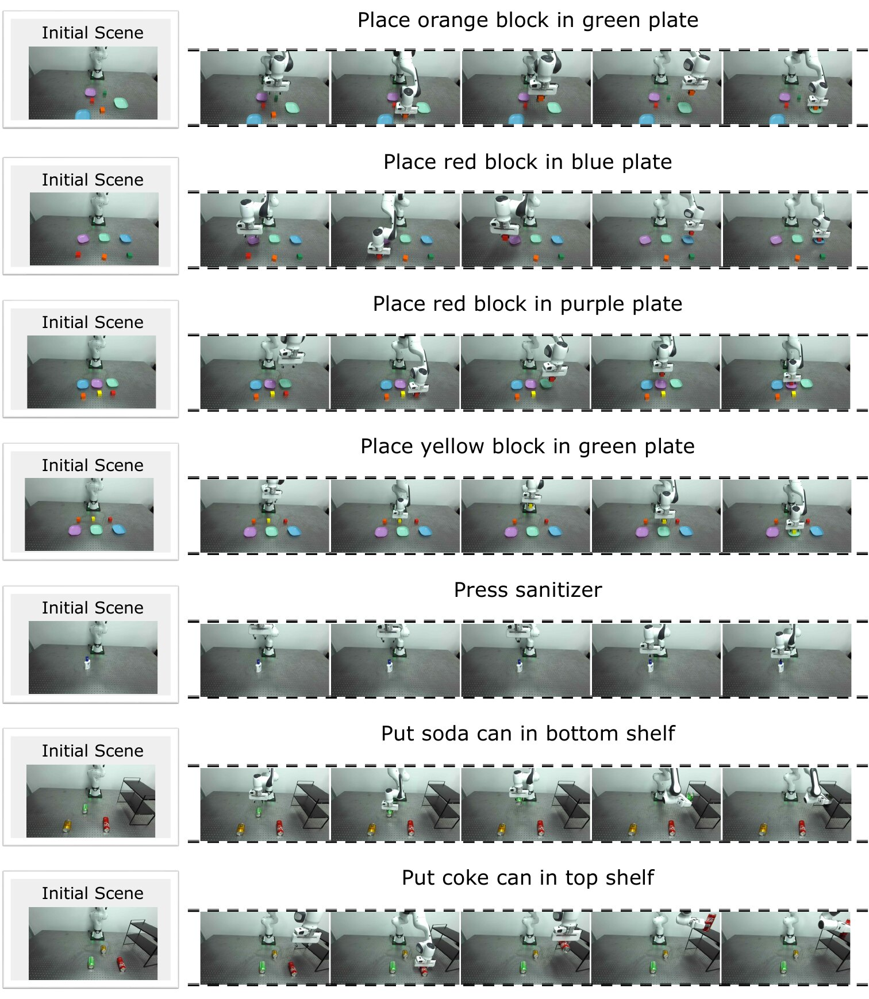
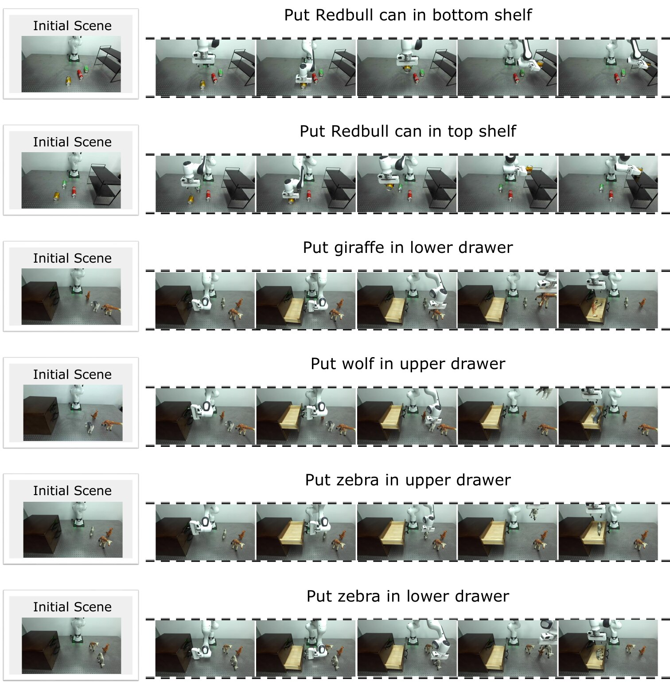
Browse the rollouts
Thirteen basic-task instructions and six generalization settings. Each generalization setting has three rollouts, on three different tasks — switch with the Rollout buttons over the video. The basic-task clips are still being prepared; every selection already shows the paper's success counts and the exact file it will play once the recording lands. All real-Franka clips play at 6× real time, as the badge in the corner marks.
Success over 10 trials — basic setting
Where it still fails
Category is the one setting whose absolute success rate stays low, and all three failures below come from it. They are not a collapse of the pre-trained grounding — the model still predicts accurate heatmaps on pre-training samples after fine-tuning. Two gaps are more likely: the pre-training images are third-person photographs rather than orthographic projections of a point cloud, and pre-training only ever asks for object localization, while manipulation needs keypoints that sit on no object at all.
“Place the bread in the green plate”
“Put the apple in the top shelf”
“Put the peach in the bottom shelf”
Base-model design ablations (RLBench)
| Variant | Avg. SR (%) ↑ | Avg. Rank ↓ | Insert | Place | Put in | Screw | Sort | Stack | Stack |
|---|---|---|---|---|---|---|---|---|---|
| Peg | Cups | Cupboard | Bulb | Shape | Blocks | Cups | |||
| BridgeVLA (full base) | 90.5 | 4.75 | 91.2 | 58.4 | 91.2 | 93.6 | 55.2 | 84.8 | 88.8 |
| ├ w/ discretized rotation | 88.2 | 4.86 | 88.0 | 58.4 | 73.6 | 87.2 | 60.8 | 76.8 | 81.6 |
| ├ w/o heatmap decoding | 31.4 | 12.78 | 0.0 | 1.3 | 5.3 | 2.7 | 4.0 | 0.0 | 0.0 |
| └ w/ 3D position input | 56.2 | 10.14 | 26.7 | 14.7 | 10.7 | 16.0 | 21.3 | 17.3 | 4.0 |
Table 9 — Base-model ablations. A representative subset of the 18 RLBench columns; the averages and ranks are over all 18 tasks. w/o heatmap decoding and w/ 3D position input use three seeds, the others five.
Predict heatmaps, not coordinates −59.1
Swapping convex upsampling for a parameter-matched Transformer decoder that regresses target positions under an MSE loss collapses RLBench from 90.5% to 31.4%, and the ablated model is markedly harder to optimize (batch 192 vs 64, careful LR tuning). The heatmap gives denser supervision, injects a 3D→2D spatial prior, and shares the spatial structure of the input images.
Do not feed 3D positions to the VLM −34.3
Fusing per-pixel 3D positions into the image features through a 3D convolutional module injects richer spatial cues — and drops success from 90.5% to 56.2%, because the image features shift away from the distribution the VLM was pre-trained on. For a pre-trained VLM, input alignment outweighs explicit 3D input.
2D-heatmap pre-training carries language generalization
Without pre-training, the policy fails to generalize in both language-related real-world settings (Combination, Category) and cannot even match RVT-2, while the full model is best in both (Figure 4). Fine-tuning on a handful of robot trajectories cannot instil grounding of language semantics in the heatmap space.
Continuous 6D rotation beats discretization −2.3
Replacing the continuous 6D rotation head with the discretized per-axis Euler classification of the conference version costs 90.5% → 88.2%, concentrated in tasks demanding precise end-effector orientations. The 6D form also avoids the gimbal lock of discretized Euler angles in near-vertical gripper poses.
Memory ablations
The two memories are not redundant: each one is load-bearing on exactly the benchmark whose difficulty it targets.
| Variant | RLBench Avg. ↑ | Insert | Place | Sort | Stack | Place |
|---|---|---|---|---|---|---|
| Peg | Cups | Shape | Cups | Wine | ||
| BridgeVLA++ (full) | 93.7 | 99.2 | 76.8 | 72.0 | 98.4 | 95.2 |
| ├ w/o spatial memory 𝒮 | 92.0 | 95.2 | 74.4 | 60.8 | 92.8 | 78.4 |
| └ w/o temporal memory 𝒯 | 91.9 | 82.4 | 57.6 | 73.6 | 93.6 | 90.4 |
Table 10 — Memory ablations on RLBench. Removing 𝒮 costs most exactly in the occlusion-heavy precision tasks it targets (sort shape 72.0 → 60.8), and removing 𝒯 costs most where a stable global reference helps (place cups 76.8 → 57.6) — even though RLBench tasks are not intrinsically memory-dependent.
| Variant | Overall Avg. ↑ | M(1) | M(n) | Rearrange | Cover | Press |
|---|---|---|---|---|---|---|
| Avg. | Avg. | Blocks | Blocks | Button | ||
| BridgeVLA++ (full) | 96.0 | 95.2 | 97.0 | 100 | 99 | 93 |
| w/o 𝒮 (spatial memory) | 95.4 | 96.2 | 94.5 | 100 | 91 | 92 |
| w/o 𝒯 (temporal memory) | 21.3 | 27.0 | 14.3 | 11 | 5 | 0 |
| Base (no memory) | 18.9 | 19.0 | 18.8 | 0 | 3 | 0 |
Table 11 — Memory ablations on RMBench. The 2×2 memory factorial. Removing 𝒯 collapses the benchmark from 96.0% to 21.3%, essentially back to the memory-free base (18.9%); removing 𝒮 is nearly harmless here, because RMBench stresses temporal sequencing rather than geometric alignment.
@article{bridgevlaplus2026,
title = {BridgeVLA++: A Data-Efficient, Generalizable, and Memory-Augmented
Vision-Language-Action Framework for 3D Manipulation},
author = {TODO: Author One and Author Two and Author Three and others},
journal = {TODO: IEEE Transactions on Pattern Analysis and Machine Intelligence},
year = {TODO},
note = {Extension of the NeurIPS 2025 conference paper BridgeVLA}
}If you build on the conference version:
@misc{li2025bridgevla,
title = {BridgeVLA: Input-Output Alignment for Efficient 3D Manipulation
Learning with Vision-Language Models},
author = {Peiyan Li and Yixiang Chen and Hongtao Wu and Xiao Ma and Xiangnan Wu
and Yan Huang and Liang Wang and Tao Kong and Tieniu Tan},
year = {2025},
eprint = {2506.07961},
archivePrefix = {arXiv},
primaryClass = {cs.RO},
url = {https://arxiv.org/abs/2506.07961}
}